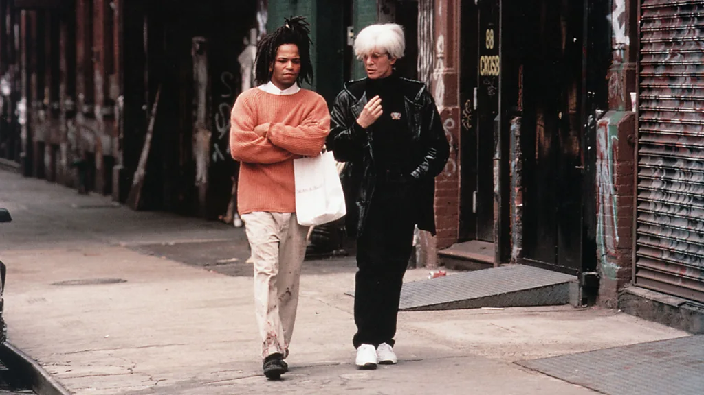

Art
The Legacy of Jean-Michel Basquiat: A Revolutionary Voice in Contemporary Art
Vince Ranel Cuevas
Tseng Kwong Chi. Jean Michel Basquiat in his Great Jones Street studio, New York, 1987.
Jean-Michel Basquiat, a towering figure in contemporary art, has profoundly influenced my journey as a Neo-Expressionist artist. At 21, having dedicated a part my life to navigating the complexities of emotion through art, I find Basquiat's work to be a source of deep inspiration. His chaotic yet organized style offers validation in a world where traditional realism is often celebrated as the pinnacle of "real" art.
The collaboration with Basquiat and Andy Warhol could be considered as one step forward in his career. It was a breakthrough when Warhol included Basquiat into his circle, which raised Basquiat to a new level, yet this gave him a taste of both sides of his popularity, and he turned to narcotics. However, these drawbacks are the unwavering message that Basquiat can convey in a burst of vibrant and raw imagery is something that I would like to unleash in my projects as well.
Movie Basquiat (1996) Jean-Michel Basquiat walking on the street
Basquiat’s role in contemporary art is not a simple one, associated with the style and contents of the works he created. Andrew was among the few black artists who achieved success and recognition in the Art world as an art majority leader, thus opening doors for other black artists in the art market. Most of his paintings show the diversions in society and the racism of the institutions with a rawness and urgency.
His creations are lively, filled with expressions of graffiti, expressionism, and abstract art; the images he used crowns, skulls and text and so on are the mix of Basquiat’s experiences and the different cultures he was influenced by. His incorporation of mixed media and combined layers was a good attribute that contributed to the complexity of his creations, which were each inspired by a different interpretation of identity in society.
Jean-Michel Basquiat on the set of Downtown 81, 1980–81. Edo Bertoglio (Swiss, born 1951). 35 mm slide. © New York Beat Films, LLC. Courtesy Maripol. By permission of the Estate of Jean-Michel Basquiat, all rights reserved
It is also important to mention that Basquiat’s art is a kind of critique of historical and current cultural topics. For example, his painting called “Irony of Negro Policeman” exposes the betrayal of Blacks in powers of oppression, and “The Death of Michael Stewart,” sometimes referred to as “Defacement,” is a powerful statement against Black people being brutalized by the police. These and many other works contribute to Basquiat's decision to transform artwork into a powerful tool with which to engage and expose the injustice of society.
Apart from a pivotal position in contemporary art, Basquiat's influence can be seen in pop culture's music, fashion, and other areas. His style and some of his musical partnerships, such as those with Jean-Michel Basquiat, have had a significant influence on art history, elevating him to the status of a cultural icon. Today Basquiat has become an inspiration to large-scale exhibitions and retrospectives which attract considerable interest and appreciation. His works are placed in such famous museums as the Museum of Modern Art, the Guggenheim Museum, and the Metropolitan Museum of Art These exhibitions not only reflect his further creativity but also state that at present, he is important in the context of today’s discussions.
The Irony of the negro policeman by Jean-Michel-Basquiat
Jean-Michel Basquiat. Untitled. 1981. Oilstick on paper, 40 x 60' (101.6 x 152.4 cm). Fractional and promised gift of Sheldon H. Solow
All in all, one can state that the story of Basquiat and his creations All things considered, the narrative surrounding Basquiat and his works emphasizes the idea that great art is revolutionary rather than merely subversive. This has influenced my understanding of artistic expression, which I now recognize as a reflection of the current state of society through art and as the result of unfiltered human feeling in a world lacking meaning. The principles I've learned from Basquiat—how to produce things, write, paint, perform, and always express what something exists, without holding back on how I feel—carry with me as I continue to find my voice as an artist. Like Basquiat, I hope my artwork will have a lasting impression on viewers, altering their perception and touching their hearts.
Therefore, Basquiat's impact on the current art scene went beyond the images and style he painted. He opened the way for other artists to be recognized by society as one of the first Black artists to make a major influence in the then predominately White art world. Several of his works have a raw, immediate quality that captures the complexities and difficulties of contemporary urban life as well as racism.
References
BBC Culture (2015, July 9) Jean-Michel Basquiat: The life and work behind the legend https://www.bbc.com/culture/article/20150709-jean-michel-basquiat-the-life-and-work-behind-the-legend
BBC Culture (2017, September 25) Jean-Michel Basquiat: The neglected genius https://www.bbc.com/news/entertainment-arts-41359913
Ugochukwu-Smooth C. Nzewi, Steven and Lisa Tananbaum Curator, Department of Painting and Sculpture. (2021) Jean-Michel Basquiat, American, 1960–1988 https://www.moma.org/artists/370
The Guggenheim Museums and Foundation (2019, June 21-November 6) Basquiat’s “Defacement”: The Untold Story https://www.guggenheim.org/exhibition/basquiats-defacement-the-untold-story